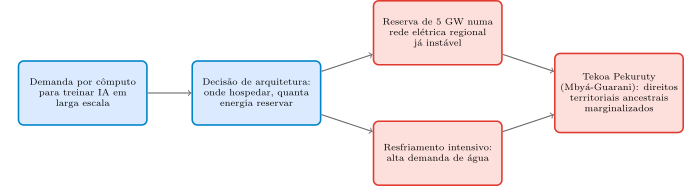
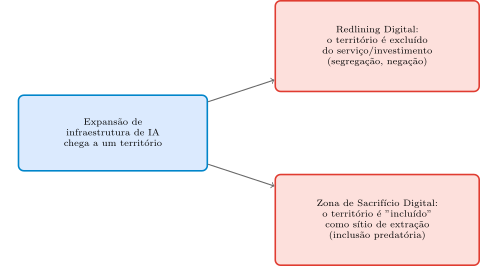
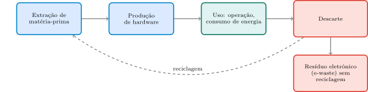

Aula 6: Arquitetura, Energia e o Custo Material da Infraestrutura Digital
Computação e Sociedade
1 Da Nuvem Etérea à Materialidade do Concreto
A Aula 5 fechou mostrando que decisões de método e de métrica — que dado medir, que janela de tempo usar, se o usuário sabe que está sendo testado — mudam o comportamento do usuário de formas concretas e mensuráveis, mesmo quando parecem “só técnicas”. A pergunta que ficou em aberto na ponte de fechamento daquela aula foi: se decisões de método e métrica já custam isso ao comportamento do usuário, o que mais uma escolha “só de engenharia” pode custar, sem que ninguém tenha “decidido” isso explicitamente?
Hoje a resposta muda de escala. Saímos do comportamento do usuário individual e vamos para a materialidade física da própria infraestrutura computacional. A Inteligência Artificial é vendida, com frequência, como algo etéreo — um reino puro de lógica existindo numa “nuvem” sem peso. Mas por trás dessa camada de abstração algorítmica há materialidade concreta: energia, água, minerais, terra. E quando essa materialidade precisa ir para algum lugar físico real, ela sempre acaba em algum território específico — e nem todo território paga o mesmo preço por hospedá-la.
- De onde vem, fisicamente, a energia e a água que sustentam a “nuvem” computacional?
- O que aconteceu, concretamente, em Eldorado do Sul (RS) quando um projeto de data center reservou 5 GW de energia?
- O que é soberania digital, e por que ela é, ela mesma, um conceito contraditório no Sul Global?
- O que distingue uma “zona de sacrifício digital” de um “redlining digital”?
- O que uma decisão de projeto de sistema computacional pode fazer, de fato, para responder a esse custo material?
Um problema motivador concreto: um artigo recente de pesquisa — Nascimento & Raimundo (2026), “Digital Sovereignty in the Polycrisis: Technological Dependency, Invisible Infrastructure, and AI Sacrifice Zones in Latin America” — abre exatamente com essa provocação:
“A Inteligência Artificial (IA) é frequentemente vendida como uma tecnologia sem peso: um reino etéreo de lógica pura existindo numa ‘nuvem’ desencarnada. No entanto, sob essa camada de abstração algorítmica há materialidade: a IA é feita de solo, água e energia. Sua existência depende da extração de minerais raros, do consumo massivo de eletricidade, e do uso intensivo de água para o resfriamento de fazendas de servidores.” (tradução livre, p. 1)
Nota de precisão: essa última frase se apoia, no artigo original, na citação de Kate Crawford (2021), The Atlas of AI — livro não lido diretamente nesta sessão (não faz parte do acervo desta disciplina). A ideia é apresentada aqui como texto de Nascimento & Raimundo (2026), não como citação direta de Crawford.
Este artigo — de autoria de Beatriz Cardoso Nascimento, aluna de graduação deste próprio Instituto de Computação, em coautoria com o professor desta disciplina — é o eixo narrativo de toda a aula de hoje, não apenas mais uma referência de rodapé. Ele ainda não foi publicado em nenhum periódico ou veículo formal (é um manuscrito em avaliação); tratamos aqui como um estudo de caso de pesquisa real e atual, com um centro nervoso muito concreto: um projeto de data center de IA no Rio Grande do Sul.
Se o custo material da IA (energia, água, minerais) fosse totalmente visível e cobrado diretamente de quem se beneficia do serviço — em vez de ficar invisível, distribuído em algum território distante —, o que provavelmente mudaria primeiro: o comportamento do consumidor, ou onde esses projetos são construídos?
Dica: pense em quem hoje arca com o custo material de um serviço de IA, e em quem hoje se beneficia dele — são, em geral, o mesmo grupo?
- □ Se a infraestrutura de nuvem não dependesse de nenhum resfriamento físico de hardware — só de processamento sem geração de calor relevante —, grande parte da pressão por água e energia que caracteriza as zonas de sacrifício digital discutidas nesta aula deixaria de existir.
- □ No limite em que a energia usada por um data center viesse inteiramente de fontes que não competem com nenhum outro uso local (nem elétrico, nem hídrico) — energia e água “extras”, sem custo de oportunidade para ninguém —, a tensão entre soberania digital e custo material discutida nesta aula deixaria de se aplicar a esse caso específico.
- □ A mesma lógica de “a materialidade de um serviço digital fica invisível para quem só usa a interface” se aplicaria a um usuário de um serviço de streaming de vídeo que nunca pensa nos servidores físicos que armazenam e processam cada vídeo assistido.
- □ Como a IA depende de energia, água e minerais para existir fisicamente, conclui-se que toda tecnologia digital, sem exceção, produz o mesmo nível de impacto material que um data center de treinamento de IA em larga escala.
2 A Materialidade Escondida: Energia, Água e Minerais por Trás da Nuvem
Antes de chegar ao caso central da aula, vale nomear o vocabulário técnico que a própria ementa desta disciplina já previa: a leitura de Maciel & Viterbo (2020, Vol. 2, Cap. 14, “Sustentabilidade e Computação”) descreve a TI Verde como o conjunto de práticas para reduzir o impacto ambiental do uso de tecnologia:
“A TI Verde disponibiliza um conjunto de práticas para tornar mais sustentável e menos prejudicial o uso de tecnologia, propondo para isso, estratégias para compatibilizar o uso de recursos naturais de forma adequada às políticas sustentáveis existentes dentro das organizações. Exemplos práticos de estratégias incluem o uso de recursos tecnológicos que consumam menos energia, o uso de matéria prima e substâncias menos tóxicas nos processos produtivos e o descarte responsável dos produtos por meio da reciclagem e da reutilização de materiais.” (Maciel & Viterbo, 2020, Cap. 14, p. 182)
O ponto central que essa leitura já deixa claro: a produção e a manutenção de hardware já demandam consumo de água, energia e minerais — antes mesmo de qualquer uso do sistema. O livro organiza isso numa tabela de diretivas ambientais para soluções de TI (Tabela 14.1), da qual vale destacar duas linhas específicas:
“Contexto: a construção e manutenção de partes de computadores implica em consumo de água. Sustentabilidade: utilizar menos hardware; priorizar fabricantes que utilizem menos água para produção e operação de seus produtos; e, correlacionado, usar softwares mais eficientes energeticamente, isto é, que demandem menos processamento, e por consequência, menos necessidade de resfriamento por água.” (tradução livre do original em português — trecho já em português na fonte)
“Contexto: a construção e manutenção de partes de computadores implica em consumo de recursos energéticos. Sustentabilidade: utilizar menos hardware; priorizar fabricantes que atentem para a eficiência de consumo energético na construção e operação de seus produtos […]; utilizar hardware em que o resfriamento dependa minimamente de combustíveis fósseis; e, correlacionado, usar softwares mais eficientes energeticamente.” (Maciel & Viterbo, 2020, Tabela 14.1, p. 194)
Repare no termo que aparece nas duas diretivas: resfriamento. Um servidor rodando em carga alta gera calor; esse calor precisa ser dissipado, e a forma mais comum e eficiente de dissipá-lo em escala industrial é usando água (torres de resfriamento, sistemas de refrigeração líquida). É exatamente por isso que “energia limpa” não resolve, sozinha, toda a equação de sustentabilidade de um data center — o resfriamento é, ele mesmo, um segundo eixo de consumo de recurso natural, independente da fonte de energia usada. É exatamente esse resfriamento, em escala industrial, que está no centro do caso que vamos analisar agora, no Bloco 3.
Um data center anuncia que “roda 100% em energia limpa” (solar/eólica). Isso resolve completamente a tensão de recursos que a Tabela 14.1 aponta?
Dica: pense em quantas dimensões de recurso a tabela lista, além de energia — água, minerais, reciclabilidade.
- □ Se toda a energia usada por um data center viesse de fontes renováveis, mas o resfriamento de seus servidores ainda dependesse de grandes volumes de água retirados de mananciais locais, a diretiva de “Consumo de Água” da Tabela 14.1 continuaria sendo violada da mesma forma.
- □ No limite em que um hardware nunca precisasse ser substituído (vida útil infinita, sem obsolescência), a diretiva de “Reciclabilidade do Produto” da Tabela 14.1 perderia parte de sua urgência prática, mesmo continuando válida em princípio.
- □ A mesma lógica de “energia limpa não resolve sozinha o consumo de água para resfriamento” se aplicaria a uma mineradora de criptomoeda que anuncia usar só energia hidrelétrica, mas mantém seus servidores refrigerados por um sistema que consome água de um rio local.
- □ Como a Tabela 14.1 lista “utilizar menos hardware” como parte da sustentabilidade em quase toda diretiva, conclui-se que a única forma de tornar um data center sustentável é reduzir drasticamente sua capacidade de processamento, tornando-o inviável para IA em larga escala.
3 Caso Central: Scala AI City e a Tekoa Pekuruty (Eldorado do Sul)
O artigo de Nascimento & Raimundo (2026) ancora seu argumento teórico num caso real, brasileiro e atual: o projeto Scala AI City, em Eldorado do Sul, no Rio Grande do Sul.
“Contradições materiais da computação. A Coalizão LEAF não é um fenômeno isolado, mas parte de uma reconfiguração sistêmica de territórios latino-americanos em zonas de sacrifício digital, onde custos metabólicos são externalizados para a periferia. Em Eldorado do Sul, a Scala AI City captura uma reserva massiva de 5 GW de energia, apesar da instabilidade elétrica da região e de sua vulnerabilidade a desastres climáticos, incluindo as enchentes de 2024, marginalizando os Mbyá-Guarani da Tekoa Pekuruty e priorizando o resfriamento de servidores sobre direitos territoriais ancestrais.” (tradução livre, p. 4)
Vale desembrulhar cada elemento factual dessa frase, porque cada um carrega peso próprio:
- 5 GW de reserva de energia. Para dar a escala: essa é uma ordem de grandeza comparável à demanda elétrica de uma região metropolitana inteira — reservada para um único empreendimento de infraestrutura digital.
- Instabilidade elétrica regional. A rede elétrica do Rio Grande do Sul já convivia, antes do projeto, com histórico de instabilidade — ou seja, a reserva não entra numa rede com folga confortável, ela compete por capacidade já escassa.
- As enchentes de 2024. O Rio Grande do Sul sofreu, em 2024, enchentes catastróficas e amplamente documentadas — o mesmo tipo de evento climático extremo que a “policrise global” do Bloco 4 associa diretamente à instabilidade energética. Construir uma reserva energética massiva justamente numa região com esse histórico recente de vulnerabilidade climática é, no mínimo, uma escolha de risco que o artigo trata como sintomática, não acidental.
- A Tekoa Pekuruty. É uma comunidade Mbyá-Guarani situada na região afetada pelo projeto. O artigo é direto ao afirmar que o empreendimento prioriza o resfriamento de servidores sobre os direitos territoriais ancestrais dessa comunidade — não como um efeito colateral incidental, mas como o mecanismo central do que o artigo chama de zona de sacrifício digital (Bloco 4 formaliza esse termo).
A Figura abaixo resume essa cadeia: uma decisão de arquitetura de sistema (onde hospedar, quanta energia reservar) se desdobra em dois efeitos materiais concretos — pressão sobre uma rede elétrica já instável, e resfriamento intensivo com alta demanda de água — que convergem sobre o mesmo território e a mesma comunidade.

Nenhum documento público do projeto declara, em nenhuma linha, “vamos priorizar o resfriamento sobre os direitos da Tekoa Pekuruty” — essa decisão nunca aparece formulada de forma explícita. O que a existe é uma sequência de decisões de arquitetura (onde hospedar, quanta energia reservar) tomadas sem que a comunidade estivesse “na sala” — o mesmo mecanismo de ausência de interessado já visto na Aula 4 (mapa de papéis) e na Aula 1 (mapa de atores), agora aplicado a uma escala territorial, não organizacional.
Vale registrar também, como ponto de precisão metodológica, que o próprio artigo de Nascimento & Raimundo (2026) inclui, em sua seção final, uma Declaração de Considerações Éticas em que as autoras explicitam sua posicionalidade como pesquisadoras de uma universidade pública latino-americana, reconhecendo não pertencer às comunidades indígenas e quilombolas discutidas, e descrevendo o compromisso de “analisar os mecanismos estruturais que produzem sua invisibilidade”, sem falar por essas comunidades. É um modelo interessante de boa prática de transparência de pesquisa — vale como referência para qualquer trabalho futuro de vocês que trate de populações vulneráveis, mesmo fora do tema desta aula.
No caso Scala AI City, nenhum documento público diz “vamos priorizar o resfriamento de servidores sobre os direitos da Tekoa Pekuruty” — a decisão nunca aparece formulada dessa forma explícita. Como, então, esse resultado acontece?
Dica: pense na estrutura já vista na Aula 4 (mapa de papéis) — quem decide uma reserva de energia, e quem seria o interessado que normalmente não está na sala.
- □ Se a Scala AI City tivesse sido construída numa região sem nenhum histórico de instabilidade elétrica e sem nenhuma comunidade indígena residente no entorno, o mecanismo de “zona de sacrifício digital” descrito pelo artigo de Nascimento & Raimundo (2026) não teria as mesmas duas evidências concretas de custo territorial que o caso real apresenta.
- □ No limite em que a reserva de energia de um data center fosse pequena o suficiente para não competir, de forma alguma, com o consumo elétrico da própria região onde está instalado, um dos dois problemas centrais do caso Eldorado do Sul (pressão sobre uma rede elétrica já instável) deixaria de se aplicar a esse caso hipotético.
- □ A mesma lógica de “um projeto de infraestrutura digital de larga escala reserva um recurso crítico numa região vulnerável, à custa de uma comunidade local” se aplicaria a um novo cabo de fibra óptica submarino que reserva a única faixa costeira apta a ancoragem numa comunidade pesqueira tradicional, sem consultá-la previamente.
- □ Como o artigo descreve a Scala AI City como um projeto que prioriza resfriamento de servidores sobre direitos territoriais, conclui-se que qualquer expansão de infraestrutura de data center na América Latina, sem exceção, produz necessariamente o mesmo padrão de marginalização de comunidades indígenas.
4 Arcabouço Teórico: Soberania Digital, Policrise e Zonas de Sacrifício Digital
O caso Scala AI City não é um incidente isolado — o artigo de Nascimento & Raimundo (2026) o lê através de um arcabouço teórico específico, que vale nomear com precisão.
Soberania digital. O termo é, segundo o próprio artigo, “um sítio de intensa contestação conceitual” — mas pode ser entendido, de forma ampla, como a capacidade de um Estado de exercer autoridade sobre sua arquitetura digital:
“[A soberania digital] pode ser amplamente entendida como a capacidade de um Estado de exercer autoridade sobre sua arquitetura digital, governar fluxos de dados dentro de sua jurisdição, e implementar modelos de governança alinhados com seus próprios interesses legais, culturais e estratégicos. Essa busca por autonomia abrange pelo menos quatro dimensões críticas — soberania infraestrutural, de dados, regulatória e epistêmica — indispensáveis para que uma nação conduza seu próprio destino digital.” (tradução livre, pp. 1–2)
Note que essas quatro dimensões podem avançar de forma desigual entre si: um país pode ter leis de proteção de dados rigorosas (soberania regulatória forte) e, ao mesmo tempo, depender inteiramente de servidores estrangeiros para hospedar os próprios dados que essas leis protegem (soberania infraestrutural fraca). É exatamente essa tensão que o artigo chama de paradoxo:
“No contexto da policrise global, a busca por essa soberania é, frequentemente, paradoxal: os requisitos materiais da expansão da IA forçam, com frequência, uma escolha entre autonomia doméstica e a atração urgente de capital tecnológico estrangeiro. […] Nesse contexto, a busca por soberania digital se torna contraditória, já que alcançar autonomia infraestrutural frequentemente exige atrair capital estrangeiro e acomodar os interesses de corporações transnacionais.” (tradução livre, p. 2)
Policrise global. O segundo conceito nomeia por que esse paradoxo não é acidental: as crises que afetam o planeta hoje não são independentes entre si, são causalmente entrelaçadas:
“O conceito de policrise global descreve a ocorrência de crises através de múltiplos sistemas globais que se tornam causalmente entrelaçadas de formas que degradam significativamente as perspectivas da humanidade. No contexto da IA, isso pode significar alimentar o consumismo por meio de algoritmos de recomendação, desenvolver vigilância e armas autônomas, e se embutir em infraestruturas de alta intensidade de carbono.” (tradução livre, p. 1)
A crise climática (enchentes de 2024 no RS), a crise energética (instabilidade da rede elétrica regional) e a crise social (marginalização da Tekoa Pekuruty) não são três problemas separados no caso Scala AI City — são a mesma policrise se manifestando em três frentes entrelaçadas, todas convergindo sobre a mesma decisão de arquitetura de infraestrutura.
Zonas de sacrifício digital. É o terceiro conceito, e o mais diretamente aplicável ao caso: a definição formal que o artigo propõe, contrastada explicitamente com um conceito vizinho e mais conhecido, redlining digital:
“Definimos zonas de sacrifício digital na América Latina como territórios onde a destruição ambiental e o esgotamento de recursos são tratados como o preço necessário para a integração tecnológica, por um julgamento político e econômico sobre sua descartabilidade. Diferente do conceito usual de redlining digital — que foca na segregação e na negação de serviços —, zonas de sacrifício digital são caracterizadas por inclusão predatória. Nessa lógica, o território é ‘incluído’ no mapa global da IA não como beneficiário do progresso digital, mas como sítio de extração de recursos e de desperdício metabólico.” (tradução livre, p. 3)
A distinção importa porque ela evita uma confusão fácil: redlining digital é sobre exclusão — um bairro, uma região, é deixado de fora de um serviço ou investimento digital (o exemplo clássico é a recusa de banda larga de qualidade em bairros pobres). Zona de sacrifício digital é o oposto estrutural: o território não é excluído, é ativamente incluído — recebe investimento, aparece em relatórios de expansão tecnológica — mas como local de extração de recurso, não como beneficiário. A Tekoa Pekuruty não foi “deixada de fora” da Scala AI City: o projeto está literalmente ao seu redor, consumindo os recursos de sua região — só que sem que a comunidade receba nenhum benefício proporcional, e sem que seus direitos territoriais sejam respeitados no processo.

Por fim, o artigo nomeia a IA como um “acelerador metabólico”: ela ao mesmo tempo otimiza e acelera processos extrativos (por exemplo, algoritmos de recomendação que fomentam consumismo) e demanda, para sua própria existência física, uma escala de eletricidade e água sem precedentes — as duas faces da mesma moeda material.
Se um território é oficialmente “incluído” no mapa global de infraestrutura de IA — recebe investimento, é mencionado em relatórios de expansão tecnológica — isso já garante que ele se beneficia dessa inclusão?
Dica: volte à distinção entre redlining digital (exclusão) e zona de sacrifício digital (inclusão predatória).
- □ Se um Estado conseguisse atrair investimento em infraestrutura de IA sem precisar acomodar nenhum interesse de capital transnacional nem externalizar nenhum custo ambiental ou social, o paradoxo da soberania digital descrito no artigo de Nascimento & Raimundo (2026) não se aplicaria a esse caso.
- □ No limite em que um território fosse formalmente excluído de qualquer investimento ou serviço digital, sem nenhuma presença de infraestrutura de IA nele, esse território se qualificaria, pela definição do artigo, como uma zona de sacrifício digital.
- □ A mesma lógica de “duas dimensões distintas de soberania digital podem estar em tensão” se aplicaria a um país que consegue soberania regulatória forte (leis rígidas de proteção de dados) mas continua dependente de infraestrutura de nuvem estrangeira para hospedar esses mesmos dados, evidenciando fraca soberania infraestrutural apesar da soberania regulatória.
- □ Como a soberania digital exige controle sobre arquitetura, dados, regulação e epistemologia, conclui-se que um país só pode ser considerado “digitalmente soberano” se tiver as quatro dimensões plenamente realizadas ao mesmo tempo, sem nenhum grau intermediário possível.
5 Ampliando o Olhar: Querétaro, Módulo Penco e o Greenwashing do Pará
O artigo de Nascimento & Raimundo (2026) não se limita ao caso brasileiro — usa dois casos adicionais, em países diferentes, para mostrar que o mesmo padrão estrutural se repete com recursos diferentes:
“Essa lógica de priorização de recursos se repete em Querétaro, México, onde centros de dados corporativos prosperam em meio a uma severa fragilidade hídrica e elétrica, enquanto comunidades locais enfrentaram um aumento de 151% nos apagões entre 2014 e 2023. Mais ao sul, o ‘Módulo Penco’, no Chile, mira sítios de resistência histórica Mapuche para extração de terras raras destinadas a hardware de IA — um projeto rejeitado por 99% da população local em consultas públicas.” (tradução livre, p. 4)
Em Querétaro, o recurso em disputa é água e eletricidade, no mesmo padrão de Eldorado do Sul (embora sem o componente de comunidade indígena específica citado no caso brasileiro). No Módulo Penco, o recurso é outro — terras raras, minerais necessários para fabricar o próprio hardware que roda os modelos de IA (não a energia para operá-los) — mas o mecanismo estrutural é idêntico: um recurso crítico para a cadeia de suprimentos de IA sendo extraído de um território com resistência histórica documentada (Mapuche), com rejeição popular esmagadora (99%) sendo, aparentemente, insuficiente para impedir o projeto.
Um segundo eixo do artigo trata de um mecanismo relacionado, mas distinto: não a extração direta de recurso, e sim a narrativa que disfarça essa extração como solução ambiental — o que o artigo chama de colonialismo verde, ilustrado pelo caso da Coalizão LEAF no Pará:
“Um exemplo saliente é o envolvimento de corporações de tecnologia na Coalizão LEAF (Lowering Emissions by Accelerating Forest Finance), uma iniciativa público-privada que financia a proteção de florestas tropicais por meio da compra de créditos de carbono jurisdicionais de grandes projetos REDD+ liderados pelo Estado. Em 2024, o governo do Pará assinou um acordo de R$ 1 bilhão para vender créditos de carbono à coalizão sem consulta às comunidades indígenas e quilombolas residentes nos territórios afetados. Essa omissão contraria diretamente os pilares normativos do Consentimento Livre, Prévio e Informado (CLPI) estabelecidos pela Convenção 169 da OIT.” (tradução livre, p. 3)
“Embora narrativas oficiais tenham enquadrado o acordo como uma vitória para a conservação, as políticas reais revelam uma agenda alinhada aos interesses corporativos. Essa dinâmica operacionaliza o colonialismo verde: a Amazônia é reposicionada como um ativo financeiro para compensar as pegadas de carbono de corporações do Norte Global. À medida que a infraestrutura de Big Tech se expande por meio de data centers de alta intensidade energética no Norte Global — aumentando exponencialmente as emissões de combustíveis fósseis —, essas corporações optam por comprar créditos de carbono em vez de reduzir seu impacto material na fonte.” (tradução livre, p. 3)
O mecanismo do greenwashing, aqui, é preciso: em vez de reduzir a própria emissão de carbono na origem (nos seus próprios data centers, por exemplo), uma corporação compra o direito de compensar essa emissão — financiando a proteção de uma floresta distante, sob um acordo que, no caso do Pará, foi negociado sem consultar quem vive naquela floresta. A narrativa de “conservação” e “sustentabilidade” faz o papel de encobrir, não de resolver, a mesma lógica de externalização de custo territorial já vista nos outros três casos.
A Coalizão LEAF apresenta o acordo do Pará como vitória de conservação. O que, no próprio texto do artigo, mostra que essa narrativa e a política real divergem?
Dica: pense em quem foi consultado, e quem não foi, no acordo de R$ 1 bilhão.
- □ Se o governo do Pará tivesse realizado consulta livre, prévia e informada às comunidades indígenas e quilombolas antes de assinar o acordo com a Coalizão LEAF, a violação específica da Convenção 169 da OIT apontada pelo artigo não teria ocorrido da mesma forma.
- □ No limite em que uma empresa do Norte Global reduzisse suas próprias emissões a zero na fonte, sem nunca precisar comprar nenhum crédito de carbono, o mecanismo de colonialismo verde descrito no caso LEAF/Pará perderia a função específica que o artigo atribui à compra de créditos (compensar, em vez de reduzir, o impacto na fonte).
- □ A mesma lógica de “uma narrativa de sustentabilidade usada para obscurecer, em vez de resolver, uma externalização de custo ambiental” se aplicaria a uma empresa de tecnologia que anuncia neutralidade de carbono comprando compensações florestais distantes, enquanto seus próprios data centers seguem aumentando o consumo real de energia fóssil na origem.
- □ Como o acordo da Coalizão LEAF foi assinado sem consulta às comunidades afetadas, conclui-se que todo mecanismo de crédito de carbono florestal é, por definição, um instrumento de colonialismo verde, independentemente de como cada acordo específico for negociado.
6 Da Crítica ao Projeto: Ciclo de Vida e TI Verde
Os Blocos 3 a 5 mostraram o padrão de custo material e territorial da infraestrutura de IA na prática. Este bloco volta às duas leituras de base já previstas na ementa desta disciplina — Van de Poel & Royakkers (2011) e Maciel & Viterbo (2020) — para nomear o vocabulário técnico que uma equipe de engenharia responsável usaria para projetar levando esse custo em conta, mesmo sabendo (Bloco 6 termina reforçando isso) que vocabulário técnico sozinho não teria evitado o problema central do caso Scala AI City.
A definição mais citada de desenvolvimento sustentável vem do relatório Brundtland, de 1987:
“Desenvolvimento sustentável é o desenvolvimento que atende às necessidades do presente sem comprometer a capacidade das gerações futuras de atender às suas próprias necessidades. Contém em si dois conceitos-chave: o conceito de ‘necessidades’, em particular as necessidades essenciais dos mais pobres do mundo, às quais se deve dar prioridade absoluta; e a ideia de limitações impostas pelo estado da tecnologia e da organização social sobre a capacidade do ambiente de atender às necessidades presentes e futuras.” (tradução livre, p. 283, definição original da Comissão Mundial sobre Meio Ambiente e Desenvolvimento, 1987)
Essa definição fundamenta duas formas de justiça, que Van de Poel & Royakkers (2011) distinguem com cuidado — e que se aplicam diretamente ao caso Scala AI City:
“O coração do desenvolvimento sustentável está em dois tipos de justiça. O primeiro tipo de justiça se refere à divisão de recursos entre a nossa própria geração e as gerações futuras: justiça intergeracional. […] Além disso, o desenvolvimento sustentável exige uma divisão justa de recursos dentro da nossa própria geração (compare o Primeiro e o Terceiro Mundo): justiça intrageracional.” (tradução livre, p. 284)
“Essencialmente, isso é uma extensão do princípio do poluidor-pagador, ou a noção de que ‘quem quebra algo também deve consertá-lo’. O ponto de partida é que o dano ao ambiente deve ser reparado pela parte responsável pelo dano.” (tradução livre, p. 284)
O caso Scala AI City é, ao mesmo tempo, um problema de justiça intrageracional (o custo material recai sobre a Tekoa Pekuruty, não sobre quem usa os serviços de IA treinados nesse data center — uma divisão desigual de custo dentro da mesma geração) e um problema de princípio do poluidor-pagador (quem reserva a energia e a água não é, necessariamente, quem repara o dano causado à rede elétrica regional ou ao território).
A segunda ferramenta técnica é a análise de ciclo de vida, que responde diretamente à competência de “ciclo de vida do lixo eletrônico” já prevista na ementa desta disciplina:
“O ponto de partida da análise de ciclo de vida é que você precisa ser capaz de comparar o impacto ambiental que seu projeto causa com projetos alternativos, a fim de alcançar um projeto sustentável. Isso pode ser feito mapeando o impacto ambiental ao longo de todo o ciclo de extração, refino, produção, uso e descarte.” (tradução livre, p. 293)
“Análise de ciclo de vida: uma análise que mapeia o impacto ambiental de um produto ao longo de todo o ciclo de produção, uso e descarte.” (tradução livre, p. 293, definição em destaque do próprio livro)
O ponto central dessa ferramenta é que medir só a fase de uso de um sistema computacional (quanta energia ele consome enquanto está rodando) esconde o impacto ambiental das outras duas fases — produção (extração de minerais, manufatura de hardware) e descarte (o que a leitura de Maciel & Viterbo, 2020, Cap. 14, chama de obsolescência programada e “e-waste”, resíduo eletrônico). A Tabela 14.1 daquele capítulo, já citada no Bloco 2, cobre exatamente essas três fases numa única lista de diretivas — a linha de “Reciclabilidade do Produto”, por exemplo:
“Contexto: a construção e manutenção de partes de computadores e produção de software demanda o uso [de] recursos, que pode ser reciclável (reutilizado), ou não. Sustentabilidade: utilizar menos hardware; e priorizar fabricantes que atentem para uso de matérias-primas recicláveis na produção. Também priorizar sistemas de software flexíveis que atendam a diferentes contextos de uso, minimizando a necessidade de atualizações constantes.” (Maciel & Viterbo, 2020, Tabela 14.1, p. 195)
O mesmo capítulo propõe ainda uma distinção útil sobre o que “software verde” pode significar:
“Verde Por Software - Aqueles desenvolvidos para domínios que trabalham para preservar a sustentabilidade no meio ambiente, ou seja, sistemas de software que servem como ferramentas para apoiar os objetivos de sustentabilidade; Verde No Software - Como tornar o software mais sustentável, resultando em um produto de software que os autores consideram ‘ambientalmente amigável’.” (Maciel & Viterbo, 2020, Cap. 14, p. 187)
Um sistema de IA que otimiza o despacho de energia renovável numa rede elétrica é “Verde Por Software”; um sistema de IA cujo próprio treinamento é otimizado para consumir menos energia é “Verde No Software” — as duas coisas são úteis, mas nenhuma das duas, sozinha, teria evitado o problema central do caso Scala AI City, que não é uma falha de eficiência técnica. É um problema de quem decide e quem é consultado — exatamente o gancho para a síntese do próximo bloco.

Se uma empresa mede sua “pegada de carbono” apenas pela fase de uso de seus servidores (a energia elétrica que eles consomem enquanto rodam), o que a análise de ciclo de vida diria que está faltando nessa contabilidade?
Dica: pensar nas fases que vêm antes e depois do “uso”: extração/ produção, e descarte.
- □ Se toda a energia elétrica usada na fase de operação de um data center viesse de fontes renováveis com impacto ambiental desprezível, a análise de ciclo de vida completa desse data center ainda poderia revelar impacto ambiental significativo nas fases de produção e descarte do hardware.
- □ No limite em que um hardware pudesse ser produzido, usado e descartado sem nenhuma extração de matéria-prima nova (100% de materiais reciclados, indefinidamente), a fase de “extração” na análise de ciclo de vida perderia, para esse hardware específico, parte de seu impacto ambiental característico.
- □ A mesma lógica de “medir só a fase de uso esconde o impacto de produção e descarte” se aplicaria a uma fabricante de smartphones que anuncia baixo consumo de energia durante o uso do aparelho, sem nunca divulgar o impacto ambiental da mineração dos metais usados em sua bateria.
- □ Como a TI Verde promove tanto “Verde Por Software” (sistemas que promovem sustentabilidade) quanto “Verde No Software” (tornar o próprio software mais sustentável), conclui-se que qualquer sistema que se enquadre em uma dessas duas categorias está, automaticamente, isento de qualquer impacto ambiental relevante.
7 Síntese: Rumo a uma Ética Territorial
Os Blocos 2 a 6 mostraram um padrão que se repete: vocabulário técnico de sustentabilidade (TI Verde, ciclo de vida) existe e é útil, mas sozinho não resolve o problema central que os Blocos 3 a 5 documentaram — porque esse problema não é de eficiência técnica, é de quem decide e quem é consultado sobre um território. O artigo de Nascimento & Raimundo (2026) propõe um conceito de síntese para essa lacuna: ética territorial.
“Confrontar os custos metabólicos da IA exige uma ética territorial, entendida como um conglomerado de princípios que regulam o comportamento das relações entre sujeitos e o território. No contexto latino-americano, esse arcabouço exige que o território seja tratado não como uma jurisdição legal passiva, mas como uma entidade multidimensional que une o ecossistema físico a espaços culturalmente apropriados. […] Alcançar a soberania digital, portanto, depende de uma ética territorial que se recuse a deixar a expansão computacional apagar as epistemologias diversas e as realidades vividas dos plurais Sules.” (tradução livre, p. 4)
A frase central para reter: território não é só uma linha num mapa administrativo (uma jurisdição legal) — é um espaço físico e cultural, onde ecossistema e modo de vida estão entrelaçados. Tratar um território só como jurisdição (uma “área disponível” para reservar energia, extrair mineral, hospedar servidor) é exatamente o movimento que permite tratar sua degradação como um “preço aceitável” — a mecânica central de toda zona de sacrifício digital discutida nesta aula.
Daí um checklist prático de síntese, sintetizando os Blocos 2 a 6, para avaliar qualquer decisão de infraestrutura digital:
- Quem paga o custo material? Energia, água, minerais, terra — a pergunta do Bloco 2/6: quem arca com o consumo desses recursos, e quem se beneficia do serviço final?
- Quem foi consultado, e como? O padrão de “inclusão predatória” do Bloco 4 e o CLPI do Bloco 5 mostram que “incluído no mapa” não é o mesmo que “consultado sobre os termos dessa inclusão”.
- Que narrativa de sustentabilidade está em jogo, e para proteger o quê? O caso LEAF/Pará (Bloco 5) mostra que uma narrativa “verde” pode encobrir, em vez de resolver, a mesma externalização de custo.
- O vocabulário técnico de projeto (ciclo de vida, TI Verde) foi usado, e em que estágio da decisão? Ferramentas de projeto ajudam, mas — como o Bloco 6 fechou — não substituem a pergunta de quem decide e quem é consultado.
Esse checklist não substitui julgamento caso a caso — mas dá uma pergunta concreta para cada situação, evitando tanto o extremo de tratar toda infraestrutura digital como neutra quanto o extremo de tratar toda expansão tecnológica como necessariamente predatória.
Escolha um projeto de infraestrutura digital que você conhece (real ou hipotético — pode ser um data center, um cabo submarino, uma mina de minerais para hardware). Aplicando o checklist desta síntese, você consegue dizer, com alguma confiança, quem paga o custo material desse projeto e quem foi consultado sobre ele?
Dica: pense especificamente na diferença entre “quem se beneficia do serviço final” e “quem arca com o custo físico de produzi-lo”.
- □ Se um projeto de data center publicasse, antes da construção, um relatório de impacto que incluísse consulta livre, prévia e informada às comunidades locais afetadas, esse projeto atenderia a uma das exigências centrais da ética territorial discutida nesta aula, mesmo que ainda pudesse ser criticado por outros motivos.
- □ No limite em que um território fosse tratado exclusivamente como jurisdição legal — sem nenhuma consideração por vínculo cultural, ecológico ou ancestral de quem nele vive —, esse tratamento seria exatamente o oposto do que a ética territorial do artigo de Nascimento & Raimundo (2026) propõe.
- □ A mesma lógica do checklist desta síntese (quem paga o custo material, quem foi consultado, que narrativa de sustentabilidade está em jogo) se aplicaria à avaliação de um novo cabo de fibra óptica internacional, verificando se comunidades costeiras ao longo de sua rota foram consultadas antes da instalação.
- □ Como a ética territorial defende que o território seja tratado como algo além de jurisdição legal passiva, conclui-se que nenhum projeto de infraestrutura digital deveria, em hipótese alguma, ser construído em território ocupado por comunidades tradicionais, independentemente de consulta ou compensação.
8 Fechamento e Ponte para a Aula 7
Voltamos ao roteiro que abriu a aula, uma frase de resposta para cada pergunta:
- De onde vem, fisicamente, a energia e a água da “nuvem”? Da construção e operação de hardware físico — energia para processar e resfriar, água para resfriar, minerais para fabricar — nunca de um espaço “etéreo” e sem peso (Bloco 2).
- O que aconteceu em Eldorado do Sul? A Scala AI City reservou 5 GW de energia numa região com rede elétrica instável e histórico recente de enchentes catastróficas, marginalizando a comunidade Mbyá-Guarani da Tekoa Pekuruty (Bloco 3).
- O que é soberania digital, e por que é contraditória no Sul Global? A capacidade de um Estado controlar sua arquitetura digital, em quatro dimensões (infraestrutural, de dados, regulatória, epistêmica) — contraditória porque alcançar autonomia infraestrutural frequentemente exige atrair o mesmo capital estrangeiro que a soberania buscaria limitar (Bloco 4).
- O que distingue zona de sacrifício digital de redlining digital? Redlining é exclusão do serviço; zona de sacrifício é inclusão predatória — o território recebe investimento, mas como sítio de extração, não como beneficiário (Bloco 4, com Querétaro, Módulo Penco e o greenwashing do Pará como variações do mesmo padrão no Bloco 5).
- O que um projeto de sistema computacional pode fazer em resposta? Ferramentas técnicas (análise de ciclo de vida, TI Verde) ajudam, mas não substituem uma ética territorial que trate o território como algo além de jurisdição legal, com consulta genuína a quem nele vive (Blocos 6–7).
O que fica em aberto: hoje vimos que o custo material da IA é distribuído de forma desigual e sistematicamente invisibilizado por narrativas de progresso tecnológico e de sustentabilidade — um sistema aparentemente neutro e técnico (uma reserva de energia, um acordo de crédito de carbono) esconde uma desigualdade estrutural que ninguém precisou “decidir” explicitamente impor. Essa mesma lógica se estende, na Aula 7, para dentro do próprio algoritmo: os dados que treinam um sistema de IA carregam uma história de viés e desigualdade que, sem auditoria, produz discriminação automatizada da mesma forma silenciosa e sem decisão explícita — só que, em vez de energia e água, o recurso em jogo passa a ser dado histórico.
“Este artigo argumentou que a expansão da infraestrutura de IA na América Latina está longe de ser um avanço tecnológico etéreo, representando, em vez disso, uma reconfiguração material da dependência colonial dentro da policrise global. […] Este trabalho convida a um diálogo mais amplo sobre uma ética territorial que confronte a crise climática e afirme o direito de geografias marginalizadas de recusar a inclusão predatória, garantindo que a soberania digital no Sul Global não resulte no apagamento ecológico e epistêmico de seus territórios.” (tradução livre, p. 4)
Assim como o custo material de um data center fica invisível até alguém escrutinar, o que você imagina que também pode estar “escondido” dentro dos próprios dados que treinam um sistema de IA, mesmo sem ninguém ter decidido explicitamente colocar isso ali?
Dica: pensar em como os dados históricos carregam decisões e desigualdades passadas, sem que ninguém precise “programá-las” de propósito.
- □ Se toda a energia e água usada por data centers de IA viessem de fontes com impacto ambiental e social desprezível, e nenhuma comunidade tivesse seus direitos territoriais afetados, o argumento central desta aula sobre “zonas de sacrifício digital” perderia sua base empírica de aplicação, mesmo que o conceito continuasse fazendo sentido em teoria.
- □ No limite em que toda decisão de arquitetura de sistema fosse tomada considerando explicitamente seu custo material e territorial completo, a categoria de “custo que ninguém decidiu explicitamente impor” discutida nesta aula deixaria de descrever esse tipo de decisão.
- □ A mesma lógica estrutural desta aula — um sistema aparentemente neutro e técnico esconde uma consequência real que ninguém precisou “decidir” explicitamente — se estenderia ao argumento da Aula 7 de que dados históricos usados para treinar um algoritmo podem carregar viés discriminatório sem que nenhum engenheiro tenha programado esse viés de propósito.
- □ Como esta aula mostrou que a materialidade da infraestrutura de IA produz custo territorial real, conclui-se que a única forma responsável de lidar com esse custo é interromper por completo o desenvolvimento de infraestrutura de IA, sem nenhuma alternativa intermediária de projeto ou governança.